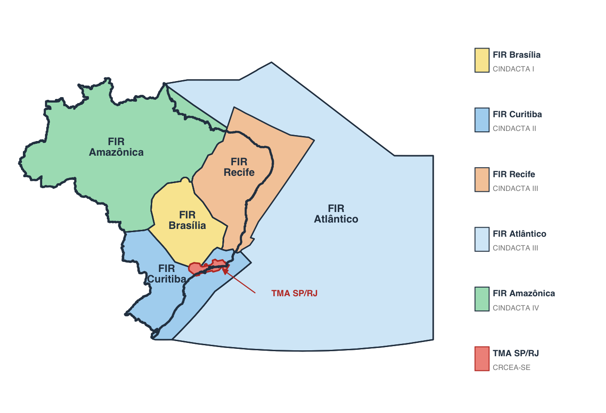
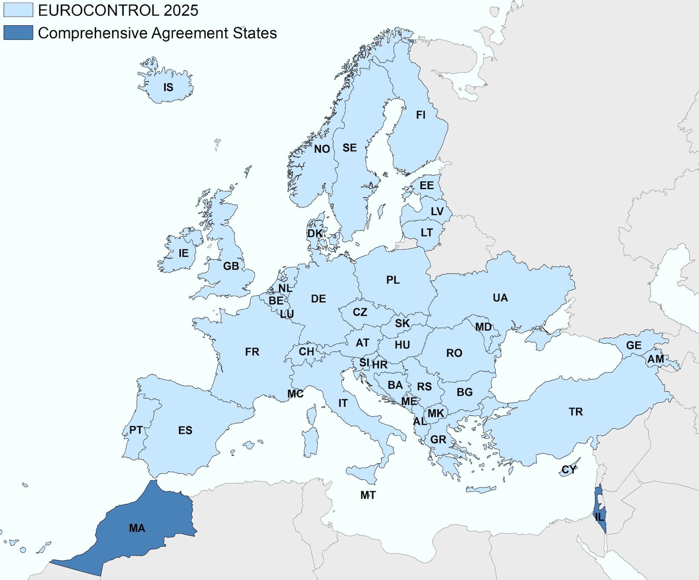
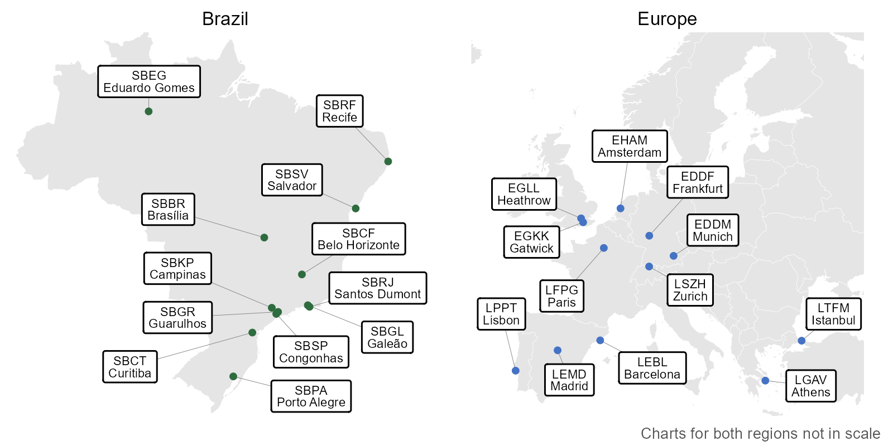

1 Introduction
1.1 Background
Air transportation is a key economic driver in Brazil and Europe. Both regions share the political goal of a performance-based approach to foster the continual growth and efficiency of air transport. It is recognised that Air Navigation Services (ANS) play a critical role in terms of limiting the constraints on airspace user operations. Accordingly, the analysis and regional comparison of operational ANS performance informs about trends over time, the success of change implementation, and potential performance benefit pools for future exploitation.
With a view to a tighter collaboration between Brazil and Europe, DECEA and EUROCONTROL signed a cooperation agreement in 2015. This agreement encompasses various activities, including the cooperation and joint initiatives in the domain of operational performance benchmarking of ANS.
The close technical collaboration of the Performance Section of DECEA and EUROCONTROL’s Performance Review Unit comprises the further development and validation of proposed ICAO GANP indicators, regular performance related data exchange, and the production of regional or multi-regional performance reports. An essential part of this work entails the identification and validation of comparable data sources, the development of a joint data preparatory process, and supporting analyses to produce this report or contribute to the aforementioned international activities.
This report represents the fifth edition of a jointly developed comparison report providing insights into the observed operational performance in Brazil and Europe.
1.2 Performance Areas
Establishing a set of shared definitions and a mutual understanding is essential to facilitate comparisons and operational benchmarking activities. Therefore, the work presented in this report is rooted in prior work conducted by ICAO, other regional or multi-regional operational benchmarking initiatives (e.g., PBWG 1), and practices within various regional or organisational settings.
The key performance indicators (KPIs) utilised in this study have been developed through a rigorous process that integrates the best available data from both the DECEA Performance Section and PRU. It is important to note that the comparative analysis in this iteration of the report does not encompass all eleven Key Performance Areas (KPA) as presented in Figure 1.
From an indicator perspective, the DECEA Performance Section and PRU have reached a consensus to concentrate on operational benchmarking and aligning their efforts with the performance indicators proposed by ICAO in conjunction with the update of the Global Air Navigation Plan (GANP). Discussions are on-going, and future work may also include aspects of cost-effectiveness.
1.3 Geographical Scope
This report’s geographical focus encompasses Brazil and Europe.
Airspace control in Brazil is a fully integrated civil-military operation. The Brazilian Air Force is responsible for air defence and air traffic control functions. This ensures air traffic safety while contributing to military defence efforts. Within this framework, the Department of Airspace Control (DECEA) operates as a governmental entity under the authority of the Brazilian Air Force Command. DECEA plays a pivotal role in coordinating and furnishing human resources and technical equipment to all air traffic service units operating within the Brazilian territory.
DECEA is the cornerstone of the Brazilian Airspace Control System (SISCEAB). The department provides air navigation services for the vast airspace jurisdiction covering 22 million square kilometres, including oceanic areas. The Brazilian airspace is further divided into five Flight Information Regions (FIR) and the areas of responsibility of these integrated Centres for Air Defence and Air Traffic Control (CINDACTA) are depicted in Figure 1.1.
The CINDACTAs merge civilian air traffic control with military air defence operations. In addition to the CINDACTAs, there’s the Regional Center of Southeast Airspace Control (CRCEA-SE). The latter is tasked with managing air traffic in the densely congested terminal areas of São Paulo and Rio de Janeiro.

In this report, Europe, i.e. the European airspace, is defined as the area where the 42 EUROCONTROL member states provide air navigation services, excluding the oceanic areas and the Canary islands (c.f. Figure 1.2). In 2016, EUROCONTROL signed a comprehensive agreement with Israel and Morocco. Both comprehensive agreement States will successively be fully integrated into the working structures of EUROCONTROL, including performance monitoring, in the coming years. Within this report, these states are included in the reported network traffic volumes.
EUROCONTROL is an inter-governmental organisation working towards a highly harmonised European air traffic management system. In general, air traffic services are provided by - predominantly national or local - air navigation service providers entrusted by the different EUROCONTROL member states. Dependent on the local and national regimes, there is a mix of civil and military service providers, and integrated service provision.
The Maastricht Upper Area Control Center is operated by EUROCONTROL on behalf of 4 States (Netherlands, Belgium, Luxemburg, and Germany). It is the only multi-national cross-border air traffic service unit in Europe at the time being. Across Europe a number of cross-border arrangements are in place. Given the European context and airspace structure, the European area comprises 37 ANSPs with 62 en-route centres and 16 stand-alone Approach Control Units (i.e. totalling 78 air traffic service units).
Europe employs a collaborative approach to managing and servicing airspace and air traffic. This includes the integration of military objectives and requirements which need to be fully coordinated within the ATM System. A variety of coordination cells/procedures exists between civil air traffic control centres and air defence units reflecting the local practices. Many EUROCONTROL member states are members of NATO and have their air defence centres / processes for civil-military coordination aligned under the integrated NATO air defence system.
Further details on the organisation of the regional air navigation systems in Brazil and Europe will be provided in the next chapter.
1.3.1 Network and Inter-regional Traffic Flow
Both regions exhibit distinct traffic flow patterns shaped by their geographic extent, population distribution, and economic geography. In Brazil, traffic is concentrated along a few high-density corridors connecting the major metropolitan areas — notably the Rio de Janeiro–São Paulo–Brasília triangle — while a significant share of movements crosses multiple FIR boundaries due to the continental scale of the country. In Europe, traffic flows are characterised by a dense network of cross-border routes, where intra-regional movements are the norm rather than the exception, reflecting the proximity of major city pairs across national boundaries. It also shows the historic roots of the European network with each State operating a major national hub and flag carrier connecting to other European states and serving international connections.
Understanding these network-level flow patterns is essential to contextualise the performance comparison presented in this report. Differences in traffic distribution, route structure, and inter-regional connectivity directly influence the operational demands placed on each air navigation system and, consequently, the performance outcomes observed.
For this report, regional traffic is defined by the geographic scope of the Brazilian air navigation system and the combined European system as domestic level air traffic. Accordingly, the Brazilian network level accounts for flight operations within the domestic airspace, while European network traffic refers to the inter-region traffic.
1.3.2 Study Airports
In previous editions of this report, the airport sample comprised 10 airports in each region, selected on the basis of IFR traffic volume and operational relevance. Building on this foundation, this edition expands the sample to 12 airports per region, adding two airports in each region to better capture the diversity of operational contexts within both air navigation systems.
In Brazil, Recife International Airport (SBRF) was included given its position among the top-30 busiest airports in the country and its role as a significant international hub serving the Northeast region. Eduardo Gomes International Airport (SBEG), located in Manaus, was also added as the most important gateway for the Northern region of Brazil, serving as a key node for both domestic connectivity and international flights to neighbouring South American countries.
In Europe, the sample was extended to include Athens International Airport (LGAV) and Istanbul Airport (LTFM), two major hubs that strengthen the geographic representativeness of the European sample and reflect the growing importance of South-eastern Europe in international air traffic flows.
Figure 1.3 provides an overview of the location of the chosen study airports within both regions. The airports are also listed in Table 1.1.
| Brazil | Europe |
|---|---|
| Brasília (SBBR) | Amsterdam Schiphol (EHAM) |
| São Paulo Guarulhos (SBGR) | Paris Charles de Gaulle (LFPG) |
| São Paulo Congonhas (SBSP) | London Heathrow (EGLL) |
| Campinas (SBKP) | Frankfurt (EDDF) |
| Rio de Janeiro S. Dumont (SBRJ) | Munich (EDDM) |
| Rio de Janeiro Galeão (SBGL) | Madrid (LEMD) |
| Belo Horizonte Confins (SBCF) | Lisbon (LPPT) |
| Salvador (SBSV) | Barcelona (LEBL) |
| Porto Alegre (SBPA) | London Gatwick (EGKK) |
| Curitiba (SBCT) | Zurich (LSZH) |
| Recife (SBRF) | Istanbul (LTFM) |
| Eduardo Gomes (SBEG) | Athens (LGAV) |

1.3.3 Temporal Scope
This report focuses on the period from January 2019 to December 2025 with a focus on the post-pandemic years. This report continues to build a timeline with comparable data to be augmented in future editions.
Throughout the report, summary statistics will be given with reference to calendar years of this comparison study unless highlighted specifically.
1.4 Data Sources
The nature of the performance indicator requires the collection of data from different sources. DECEA Performance Section and PRU investigated the comparability of the data available in both regions, including the data pre-processes, data cleaning and aggregation, to ensure a harmonised set of data for performance comparison purposes.
DECEA’s data sources for this edition were expanded to include SETA Millennium, a system that extracts flight data directly from ATC systems. This addition complemented the tower-collected operational records already in use and was further combined with official ANAC (Brazilian CAA) data on scheduled commercial flights in Brazil. Together, these sources cover key parameters such as operation timestamps, gate entry and exit times, and flight origin and destination, increasing the precision of the analysis.
Within the European context, PRU has established a variety of performance-related data collection processes. For this report the main sources are the European Air Traffic Flow Management System (ETFMS 2) complemented with airport operator reported data. These sources are combined to establish a flight-by-flight record. This ensures consistent data for arrivals and departures at the chosen study airports. The data is collected on a monthly basis and typically processed for the regular performance reporting under the EUROCONTROL Performance Review System and the Single European Sky Performance and Charging Scheme (EUROCONTROL 2019).
1.5 Structure of the Report
This third edition of the Brazil-Europe comparison report is organised as follows:
- Introduction – overview, purpose and scope of the comparison report; short description of data sources used;
- Air Navigation System Characteristics – high-level description of the two regional systems, i.e. areas of responsibility, organisation of ANS, and high-level air navigation system characteristics;
- Traffic Characterisation – network level and airport level air traffic movements; peak day demand, and fleet composition observed at the study airports;
- Predictability observed arrival and departure punctuality;
- Capacity and Throughput assessment of the declared capacity at the study airports and the observed throughput, including runway system utilisation comparing achieved peak throughput to the declared capacity;
- Efficiency analysis of taxi-in, taxi-out, and terminal airspace operations
- Topic Studies presents a high-level view on the use of point merge operations at two study airports, and a center-level characterisation; and
- Conclusions summary of this report and associated conclusions; and next steps.